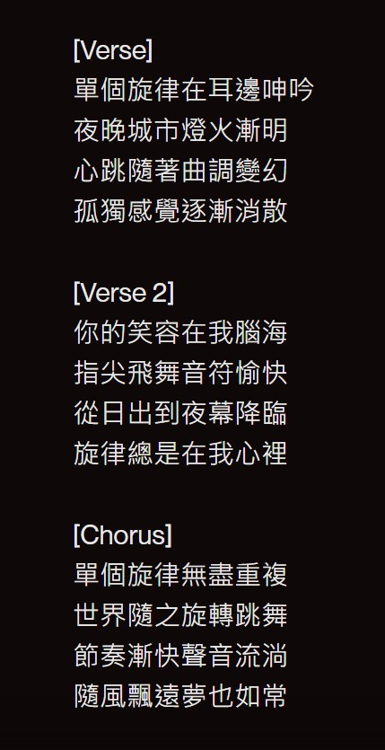
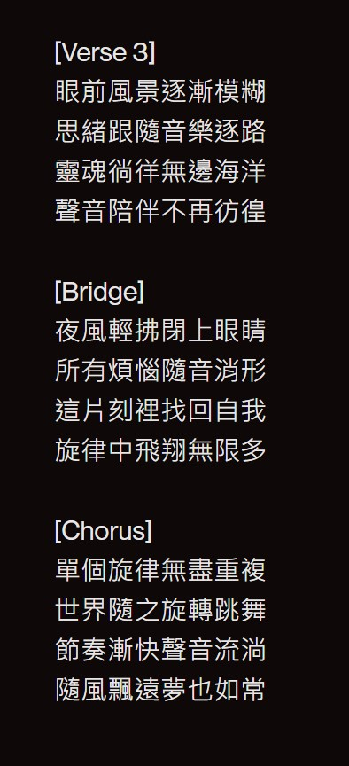
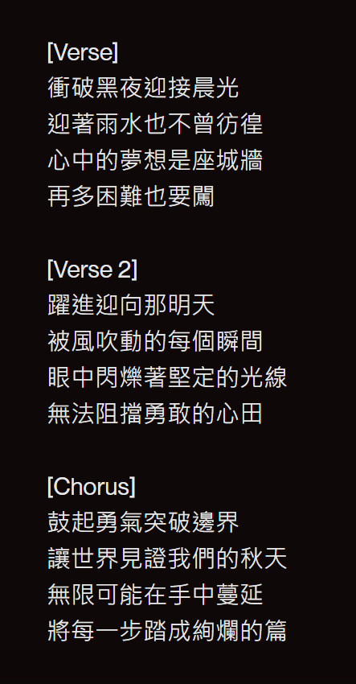
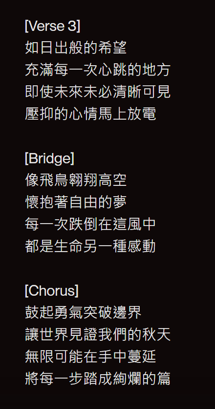

既然你誠心誠意的發問了，我就大發慈悲的告訴你
分享下最近的發現🫶
2024
1102
SUNO
平常都有接觸AI音樂，但印象中都是半AI半人工，又都是輕音樂。
但有次老師推薦SUNO就今去看看，隨便下個指令"單個旋律""躍進"
結果挖塞，變成一首歌。


單個旋律
SUNO
躍進
SUNO
〈單個旋律〉歌詞
 
〈躍進〉歌詞
 聯絡方式
Instagram :@yang_chien._.9
IG連結:https://www.instagram.com/yang_chien._.9/profilecard/?igsh=MXFtcTA4dzFwdDd3dg==
Facebook:閔茜
FB連結:https://www.facebook.com/profile.php?id=100013455575253
可以的話請不要聯絡